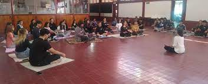
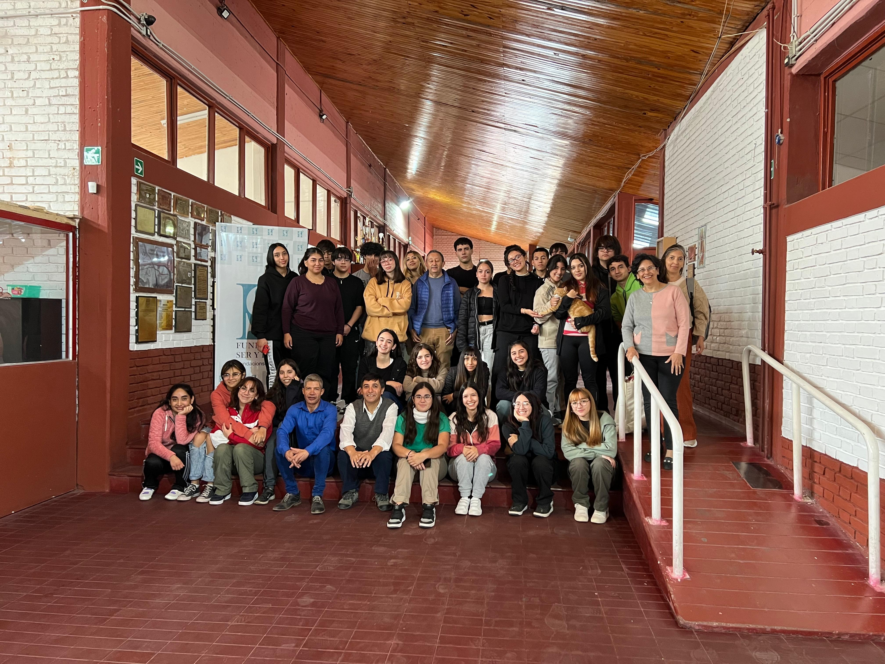
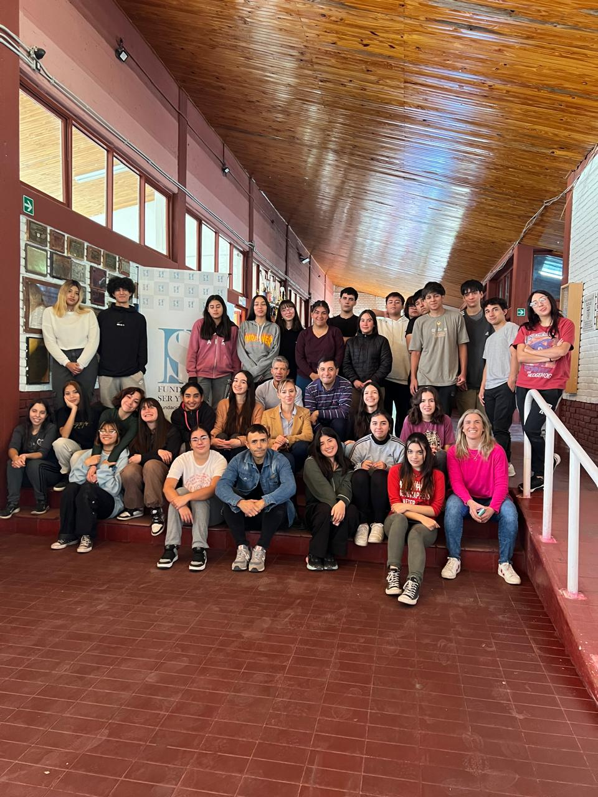

¿Quiénes somos?
La Fundación Ser y Hacer es una organización sin fines de lucro cuyo objetivo es capacitar y acompañar a las personas en la exploración de su propósito y en el diseño de su proyecto de vida. Lo hacemos a través de programas y actividades que fomentan el desarrollo personal, promueven liderazgos basados en el servicio y contribuyen al crecimiento de dirigentes sociales y emprendedores.
¿Qué hacemos?
- Constrúyete con Propósito y con Poder (16-18 años)
Programa para jóvenes que les ayuda a descubrir su propósito en la vida y desarrollar las habilidades necesarias para alcanzarlo.
- Taller de Liderazgo para Dirigentes Sociales
Taller que brinda a los líderes sociales las herramientas necesarias para ser más efectivos en su trabajo.
- Programa de Emprendimiento
Programa que ayuda a los emprendedores a desarrollar y lanzar sus negocios.
¿Cómo puedes encontrarnos en las redes?
- Instagram: seryhacer.fundacion
Nuestros encuentros
- 
- 
- 
-
dia 1
-
dia 2
-
dia 3
-
dia 4
-
dia 5